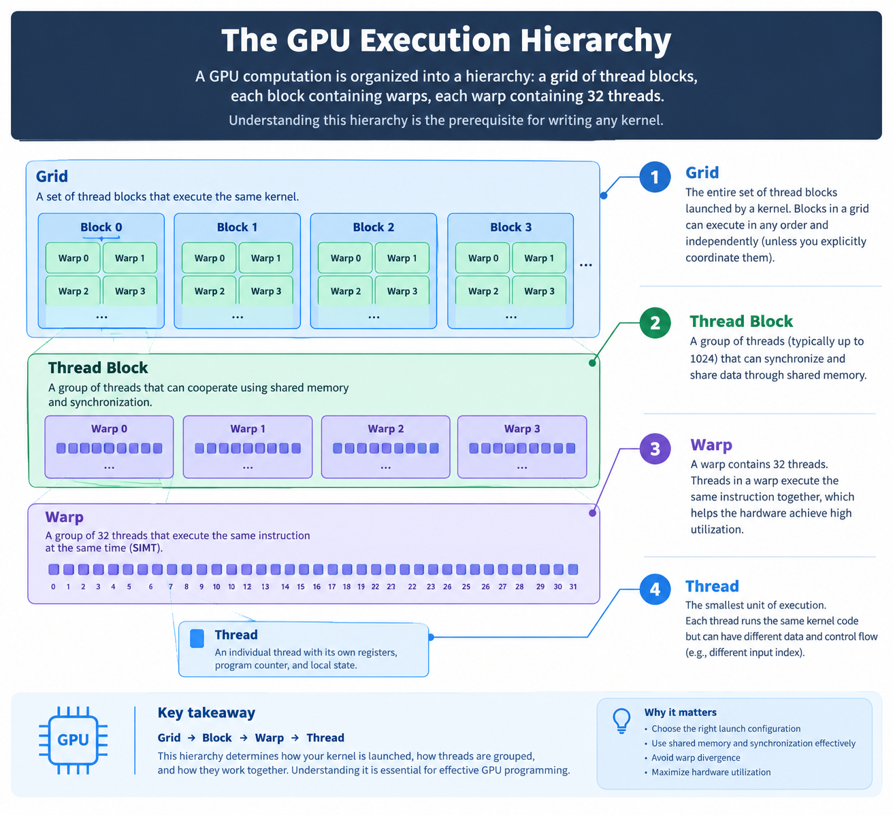

Parallel computing from first principles to production.
GPU and accelerator programming is the art of writing software that uses specialized processors to execute workloads in parallel. It is the foundation of modern AI training, inference, and scientific computing — and the path from using ML frameworks to understanding what runs beneath them.
10chapters
1000sthreads in parallel
6frameworks covered
∞room to optimize
Book outline
Ten chapters, one complete picture
From the fundamental difference between a CPU and a GPU, through memory hierarchies and matrix kernels, to distributed training and production profiling. Each chapter builds on the last.
A CPU is designed to do one complicated thing very fast. A GPU is designed to do millions of simple things at the same time. Understanding that distinction unlocks everything else in this book.
CPU — Central Processing Unit
A small number of powerful cores with sophisticated control logic, deep branch prediction, and out-of-order execution. Built for latency: finish one task as fast as possible. Examples: Intel Core, AMD Ryzen, Apple CPU cores.
GPU — Graphics Processing Unit
Thousands of simpler execution resources designed to process data concurrently. Built for throughput: process as many elements as possible per second. Examples: NVIDIA CUDA GPUs, AMD Radeon, Apple GPUs.
AI Accelerator
Specialized processors designed for specific computational patterns — matrix operations, tensor math, or neural network inference. Examples: Google TPU, AWS Trainium, Apple Neural Engine, Intel Gaudi.
The key insight is not simply "more processors equals faster." It is about exposing useful parallelism. Consider adding two arrays of a million elements: every element can be computed independently. On a CPU you process them one by one (or a handful at a time). On a GPU you launch a kernel that processes all of them at once.
The goal is to minimize data movement, synchronization, and overhead while maximizing the work performed per clock cycle per watt of power consumed.
CONCEPT — PARALLEL ARRAY ADDITION
# The operation is identical for every index i
C[i] = A[i] + B[i]
# CPU: loop sequentially (or in small SIMD batches)for i in range(1_000_000):
C[i] = A[i] + B[i]
# GPU: launch 1,000,000 threads simultaneously# Each thread handles one i — all run in parallel
The goal is not simply to use more processors. It is to expose enough useful parallel work while minimizing data movement, synchronization, and overhead.
Chapter 02
Inside the GPU
A GPU computation is organized into a hierarchy: a grid of thread blocks, each block containing warps, each warp containing 32 threads. Understanding this hierarchy is the prerequisite for writing any kernel.
LEVEL 01
🌐
Grid
The complete set of thread blocks launched for a kernel call. A grid can be one-, two-, or three-dimensional depending on the problem shape.
One grid per kernel launch
Can contain thousands of blocks
Indexed with blockIdx
LEVEL 02
📦
Thread Block
A group of threads that cooperate through shared memory and synchronization barriers. Threads in the same block can share data efficiently.
Up to 1024 threads per block (CUDA)
Scheduled onto a single SM
Indexed with threadIdx
LEVEL 03
⚡
Warp
On NVIDIA GPUs, 32 threads scheduled together under the SIMT model. All threads in a warp execute the same instruction at the same time — divergence has a cost.
32 threads per warp (NVIDIA)
Hardware scheduling unit
Branch divergence serializes paths
Kernel Launch
│
▼
Grid (all blocks for this launch)
│
├── Block 0
│ ├── Warp 0 → Thread 0 … Thread 31
│ ├── Warp 1 → Thread 32 … Thread 63
│ └── Warp N → …
│
├── Block 1
│ ├── Warp 0
│ └── …
│
└── Block N (up to thousands of blocks)
Each block is assigned to a Streaming Multiprocessor (SM) on the GPU die. The SM manages the warp schedulers, register file, and shared memory for all the threads in its resident blocks. An SM can hold many blocks simultaneously, hiding memory latency by switching between warps while some are waiting for data.
The exact terminology differs across vendors: AMD uses wavefronts and compute units; Apple Metal uses threadgroups; but the conceptual hierarchy of grid → group → warp → thread is universal.
GPU execution — visual reference

Chapter 03
The Programming Model
Writing a correct GPU kernel requires three things to be right simultaneously: parallelism, memory, and scheduling. Getting any one of them wrong costs performance even when the math is correct.
Parallelism
Decompose the problem into independent work units. Each thread should operate on a separate data element with minimal dependence on other threads' results.
Memory
Move and reuse data efficiently. A kernel that computes correctly but fetches from global memory on every access will be slow — data locality is performance.
Scheduling
Coordinate work across execution resources. Thread indexing, launch configuration, and synchronization barriers all affect how work is distributed and when threads can proceed.
Thread indexing
Every thread computes its unique position in the data from blockIdx and threadIdx. Getting this formula right is the first skill every kernel writer must master.
Bounds checking
The number of threads launched is often rounded up to a multiple of the block size. Always guard against out-of-bounds access with an explicit if (i < N) check.
Synchronization
__syncthreads() ensures all threads in a block reach the same point before any proceed. Essential when threads cooperate through shared memory. Misuse causes data races or deadlocks.
CUDA C++ — VECTOR ADDITION KERNEL
__global__void vectorAdd(
const float* A,
const float* B,
float* C,
int N
) {
// Each thread computes one output elementint i = blockIdx.x * blockDim.x + threadIdx.x;
if (i < N) { // bounds guard
C[i] = A[i] + B[i];
}
}
// Launch: ceil(N/256) blocks × 256 threads eachint threads = 256;
int blocks = (N + threads - 1) / threads;
vectorAdd<<<blocks, threads>>>(A, B, C, N);
A program that runs correctly on a CPU may not automatically perform well on a GPU. Accelerator programming requires understanding the relationship between computation, memory access, and hardware execution.
Chapter 04
Memory Hierarchy: The Key to Performance
GPU performance is often limited not by how many arithmetic units are available, but by how efficiently data reaches them. Understanding the memory hierarchy is more important than any other single optimization.
Memory type
Scope
Latency
Capacity
Programmer-managed?
Registers
Per thread
~1 cycle
Very small (~255 per thread)
Implicit (compiler allocates)
Shared memory
Thread block
~1–5 cycles
16–228 KB per SM
Yes — __shared__ keyword
L1 / L2 cache
SM / device
~20–40 cycles
MB-range
No — hardware managed
Global memory
Device-wide
~400–800 cycles
GB-range (e.g. 80 GB HBM)
Yes — explicit allocation
Constant memory
Device-wide (read)
~1 cycle (cached)
64 KB
Yes — __constant__ keyword
COMPUTE-BOUND
Arithmetic is the bottleneck
Adding more compute units helps
Memory bandwidth is underutilized
Typical: dense matrix multiplications with tensor cores
Fix: fuse operations, use specialized units
MEMORY-BOUND
Data movement is the bottleneck
Arithmetic units are idle, waiting for data
Common for elementwise ops on large tensors
Fix: tiling, coalescing, kernel fusion
Roofline model helps diagnose this precisely
SIMPLIFIED ROOFLINE — EXECUTION TIME MODEL
Execution Time ≈ max(
Operations / Compute Throughput, # ops / FLOP/s
Bytes Transferred / Memory Bandwidth # bytes / GB/s
)
# A100: ~312 TFLOP/s (TF32), ~2 TB/s HBM bandwidth# For a kernel to be compute-bound: ops/bytes > 312T / 2T = 156# Arithmetic Intensity (FLOP/byte) must exceed the roofline slope
Performance principle: understand which limit applies before attempting any optimization. Adding more compute to a memory-bound kernel is wasted effort.
Chapter 05
SIMT & Branch Divergence
NVIDIA's SIMT model lets each thread appear to have its own instruction pointer, but under the hood 32 threads share execution resources. When those threads disagree on which path to take, the hardware serializes the paths — and efficiency drops.
SIMD — Single Instruction, Multiple Data
One instruction is applied to multiple data lanes simultaneously. The programmer explicitly vectorizes: there is one program counter per SIMD unit, and all lanes must execute the same operation. CPU AVX/SSE instructions are SIMD. Every lane either runs or masks — there is no per-lane branching.
SIMT — Single Instruction, Multiple Threads
Each thread has its own registers and program counter but shares execution resources with 31 siblings in a warp. Threads can diverge — each gets its own conditional path — but the hardware must execute each divergent branch in turn, masking off inactive lanes. This is flexible but has a cost when branches diverge within a warp.
CUDA — WARP DIVERGENCE EXAMPLE
// BAD: threads in the same warp take different pathsif (threadIdx.x % 2 == 0) {
result = expensiveOperationA(); // even threads
} else {
result = expensiveOperationB(); // odd threads
}
// Hardware executes A with odd threads masked,// then executes B with even threads masked.// Effective throughput halved for this warp.// BETTER: restructure so all threads in a warp// take the same path (e.g. split even/odd into separate blocks)
Not every conditional is harmful. Divergence that resolves quickly — a bounds check at the end of an array, for example — has minimal impact. The performance cost is proportional to the work done in the divergent paths, not the mere presence of a branch.
Modern NVIDIA architectures (Volta and later) use Independent Thread Scheduling, which changes some divergence semantics. But the principle holds: keep threads in the same warp doing the same thing for maximum hardware utilization.
Occupancy concept
What it means
Why it matters
Active warps
Warps currently resident on an SM
More warps = more opportunities to hide latency
Occupancy
Active warps / max possible active warps
High occupancy helps, but is not the only target
Register pressure
More regs per thread → fewer threads fit per SM
Trade-off between register use and occupancy
Shared memory pressure
More shared mem per block → fewer blocks fit per SM
Same trade-off applies to shared memory allocation
Chapter 06
Matrix Multiplication: The Foundation of AI
Virtually every operation in a deep learning model — attention, feed-forward layers, embeddings — reduces to matrix multiplication. Understanding how GPUs accelerate it is the most important single topic in this book.
For matrices A (M×K), B (K×N), output C (M×N), each element is computed as a dot product of a row of A and a column of B:
MATHEMATICS — MATRIX MULTIPLICATION
C[i][j] = Σ A[i][k] * B[k][j] for k = 0 … K-1
k
# M×N output elements, each requiring K multiply-adds# Total operations: 2 * M * K * N (multiply + accumulate)# For 4096×4096×4096: ~137 billion FLOPs
NAIVE CPU IMPLEMENTATION
Three nested loops
def matmul(A, B):
M, K, N = len(A), len(B), len(B[0])
C = [[0]*N for _ in range(M)]
for i in range(M):
for j in range(N):
for k in range(K):
C[i][j] += A[i][k]*B[k][j]
return C
O(M·K·N) serial operations. For 4096³ that is 137 billion — completely sequential.
NAIVE GPU KERNEL
One thread per output element
__global__ void matmul(
float* A, float* B, float* C,
int M, int K, int N)
{
int row = blockIdx.y * blockDim.y + threadIdx.y;
int col = blockIdx.x * blockDim.x + threadIdx.x;
if (row < M && col < N) {
float acc = 0;
for (int k = 0; k < K; k++)
acc += A[row*K + k] * B[k*N + col];
C[row*N + col] = acc;
}
}
M×N threads run in parallel. Still memory-bound — each thread re-reads the same rows and columns from global memory.
NVIDIA Tensor Cores
Dedicated matrix units that compute a 16×16 matrix fragment multiply-accumulate in a single operation. Available from Volta onward. cuBLAS and PyTorch use them automatically for supported shapes and dtypes.
AMD Matrix Cores
AMD's equivalent in CDNA/RDNA architectures. Used through rocBLAS and the ROCm/HIP stack. Enabled via WMMA-equivalent intrinsics or via high-level libraries.
Google TPU MXU
The Matrix Multiply Unit at the heart of every TPU generation. Designed from scratch to maximize matrix throughput for neural network workloads using systolic array architecture.
Each output element can be computed independently. This makes matrix multiplication a natural fit for parallel hardware — and the reason modern GPUs are essentially matrix accelerators.
Chapter 07
Tiling & Data Reuse
The naive GPU matrix multiplication kernel is memory-bound: threads repeatedly fetch the same data from slow global memory. Tiling fixes this by loading chunks of data into fast shared memory and reusing them across many multiply-add operations.
01
Partition output matrix C into tiles. Assign one thread block to compute each tile. The tile dimensions determine the block dimensions.
02
For each K-step, cooperatively load a tile of A from global memory into shared memory. Each thread loads one element; the block loads the whole tile together.
03
Similarly load a tile of B. These two loads from global memory replace repeated individual fetches — the data is now on-chip for the whole block to reuse.
04
Call __syncthreads() to ensure all threads have finished loading before any thread begins computing. Without this barrier, a fast thread might read stale data.
05
Perform all multiply-add operations using the shared-memory tiles. This is the compute phase — fast on-chip arithmetic with no global memory traffic.
06
Advance the K-step pointer and repeat for the next tile pair. At the end, write the accumulated output element to global memory — one write per thread.
CUDA — TILED MATRIX MULTIPLICATION (SKETCH)
#define TILE 16
__global__void tiledMatmul(
const float* A, const float* B, float* C,
int M, int K, int N)
{
__shared__float sA[TILE][TILE];
__shared__float sB[TILE][TILE];
int row = blockIdx.y * TILE + threadIdx.y;
int col = blockIdx.x * TILE + threadIdx.x;
float acc = 0.0f;
for (int t = 0; t < K / TILE; t++) {
sA[threadIdx.y][threadIdx.x] = A[row * K + t * TILE + threadIdx.x];
sB[threadIdx.y][threadIdx.x] = B[(t * TILE + threadIdx.y) * N + col];
__syncthreads(); // wait for tile loadsfor (int k = 0; k < TILE; k++)
acc += sA[threadIdx.y][k] * sB[k][threadIdx.x];
__syncthreads(); // wait before next tile load
}
if (row < M && col < N) C[row * N + col] = acc;
}
Why tiling helps
Without tiling, a TILE×TILE output block requires 2×TILE reads of A rows and TILE reads of B columns — each element read TILE times from global memory. Tiling loads each element once into shared memory and reuses it TILE times. Global memory traffic drops by a factor of TILE.
Choosing tile size
Larger tiles mean more reuse but consume more shared memory, reducing the number of blocks that can reside on an SM simultaneously (occupancy drops). The optimal tile size is hardware-dependent. Modern libraries use auto-tuned tile sizes — often 128×128 with additional register tiling.
Performance principle: reuse data close to the computation whenever practical. Every byte loaded from global memory should ideally be used many times, not once.
Chapter 08
Tensor Cores & Specialized Hardware
Modern AI accelerators add dedicated matrix units on top of the general-purpose SIMT cores. These units can execute a full matrix fragment multiply-accumulate in a single instruction — delivering an order-of-magnitude speedup for the operations that dominate neural network workloads.
NVIDIA Tensor Cores
Introduced in Volta (2017), each Tensor Core computes a 4×4 (or larger, depending on generation) FP16/BF16/FP8 matrix multiply-accumulate per clock. An A100 can deliver up to 312 TFLOP/s in TF32 precision using Tensor Cores alone.
AMD Matrix Cores
Present in CDNA2 and CDNA3 (MI200/MI300 series). Support FP16, BF16, FP8, and INT8 matrix operations at high throughput. Accessed through rocBLAS, hipBLAS, or low-level WMMA-equivalent intrinsics.
Google TPU Matrix Units
The systolic array MXU in each TPU chip performs large matrix multiplications without involving a conventional GPU thread hierarchy. XLA compiles JAX and TensorFlow graphs to use these units automatically.
Format
Bits
Typical use
Trade-off
FP32
32
Reference computation, gradient accumulation
Full precision, half the throughput of FP16
TF32
19 effective
NVIDIA default for matmul (automatic)
Same range as FP32, reduced mantissa bits
FP16
16
Mixed-precision training and inference
Narrow range — requires loss scaling
BF16
16
Training and inference (preferred over FP16)
Same range as FP32, less precision than FP16
FP8
8
Frontier model training (Hopper/Ada)
Very narrow range, requires careful calibration
INT8
8
Post-training quantized inference
No gradients; requires quantization-aware training or PTQ
INT4
4
Low-bit weight inference (e.g. GPTQ, AWQ)
Significant quality loss without careful calibration
Lower precision is not automatically better. Numerical accuracy, supported operations, memory behavior, and throughput must all be evaluated for the specific workload. BF16 is the practical sweet spot for most LLM training today.
Chapter 09
Programming Frameworks
Different hardware vendors and different abstraction levels call for different tools. You need to know the landscape: what each framework provides, what it hides, and when to go lower.
FRAMEWORK 01
🟢
CUDA
NVIDIA's native platform for GPU computing. The broadest ecosystem — libraries, profilers, compiler toolchain, and a decade of community knowledge.
CUDA C++ for kernel development
cuBLAS, cuDNN, cuSPARSE libraries
Nsight Systems / Nsight Compute profilers
Required for NVIDIA hardware
Vector add in CUDA: Write a __global__ kernel, allocate device memory with cudaMalloc, copy data with cudaMemcpy, launch the kernel with the <<<blocks, threads>>> syntax, and synchronize with cudaDeviceSynchronize. The full control this gives is also the full responsibility it imposes.
FRAMEWORK 02
🔴
ROCm / HIP
AMD's open software platform. HIP is syntactically close to CUDA — many kernels can be ported with minimal changes using the hipify tool.
C++ programming environment
rocBLAS, MIOpen for deep learning
rocprof for performance analysis
hipify for CUDA porting
Porting from CUDA: Replace cuda* prefixes with hip*, __device__ and __global__ remain unchanged, blockIdx/threadIdx/threadDim are identical. Most matrix-kernel code ports with a sed command, though architecture-specific tuning still needs hardware-specific work.
FRAMEWORK 03
🍎
Metal
Apple's GPU API for graphics and compute on Apple Silicon. Unified memory simplifies data sharing between CPU and GPU. The Metal Shading Language is C++-based.
Metal Shading Language (MSL)
Unified memory — no explicit copies
Xcode Instruments for profiling
PyTorch MPS backend available
Metal kernel: kernel void vector_add(device const float* A [[buffer(0)]], device const float* B [[buffer(1)]], device float* C [[buffer(2)]], uint id [[thread_position_in_grid]]) { C[id] = A[id] + B[id]; } — the buffer binding annotations replace CUDA's explicit pointer parameters.
FRAMEWORK 04
⚡
Triton
OpenAI's Python-based kernel language and compiler. Write tile-level GPU kernels in Python-like syntax; Triton handles warp-level scheduling, vectorization, and memory coalescing automatically.
Python decorator syntax
Tile-level programming model
Auto-tunes on the target hardware
Used inside PyTorch 2.0 torch.compile
Triton kernel: @triton.jit def add_kernel(X, Y, Z, N, BLOCK: tl.constexpr): pid = tl.program_id(0); offs = pid * BLOCK + tl.arange(0, BLOCK); mask = offs < N; x = tl.load(X + offs, mask=mask); tl.store(Z + offs, x + tl.load(Y + offs, mask=mask), mask=mask) — the tile logic is explicit; the warp management is implicit.
FRAMEWORK 05
🔵
JAX / XLA
Google's Python numerical computing library. Write NumPy-like code; XLA compiles it to optimized kernels for GPU, TPU, or CPU targets. jit, vmap, pmap, and grad transform programs automatically.
jit: ahead-of-time kernel compilation
vmap: auto-vectorization
pmap: multi-device data parallelism
Native TPU support
JAX matmul: import jax.numpy as jnp; A = jnp.ones((4096, 4096)); B = jnp.ones((4096, 4096)); C = jnp.dot(A, B) — XLA's compiler emits hardware-optimized kernels. Add @jax.jit to ensure compilation happens once; subsequent calls reuse the compiled artifact.
FRAMEWORK 06
🟠
PyTorch
The dominant deep learning framework. A high-level interface backed by cuBLAS, cuDNN, and (via torch.compile) Triton-generated kernels. The right starting point for most ML work.
Tensor operations dispatch to optimized kernels
torch.compile lowers to Triton/CUDA
PyTorch Profiler for flamegraphs
CUDA, ROCm, and MPS backends
PyTorch timing: import torch; A = torch.randn(2048, 2048, device='cuda'); B = torch.randn(2048, 2048, device='cuda'); for _ in range(10): C = A @ B; torch.cuda.synchronize(); start = torch.cuda.Event(enable_timing=True); start.record(); C = A @ B; end = torch.cuda.Event(enable_timing=True); end.record(); end.synchronize(); print(start.elapsed_time(end), 'ms').
Also worth knowing: OpenCL (open cross-vendor standard, useful for learning heterogeneous concepts), SYCL / oneAPI (Intel's C++ model for CPUs, GPUs, FPGAs), and ONNX Runtime (cross-hardware inference serving). None of these exclude each other — production systems often use multiple layers.
Chapter 10
From Kernels to Production
This final chapter connects individual kernel techniques to the full stack: the LLM operations that dominate real workloads, the FlashAttention algorithm that transformed transformer efficiency, distributed training parallelism strategies, and the profiling discipline that separates guessing from knowing.
LLM Kernel Map
Every Transformer layer is a composition of: matrix multiplications (Q/K/V projections and FFN layers), attention (QKᵀ, softmax, ·V), layer normalization (reduction + elementwise), embedding lookups (gather), and activation functions (elementwise). Each maps to a different optimization strategy.
Kernel Fusion
Instead of: Operation A → write HBM → Operation B → read HBM → write HBM → Operation C, a fused kernel keeps intermediate results on-chip. Reduces HBM traffic and kernel-launch overhead. Not always beneficial — register pressure and occupancy can offset the gains.
KV Cache
During autoregressive decoding, past key and value tensors are cached to avoid recomputation. KV cache size scales linearly with sequence length and batch size — memory capacity, not compute, becomes the bottleneck. Techniques like GQA and MLA reduce this footprint.
Key algorithm
FlashAttention: IO-Aware Attention
Standard attention materializes an N×N attention matrix in HBM. For long sequences this dominates memory traffic and capacity. FlashAttention uses tiling and online softmax to keep intermediate activations on-chip.
TRADITIONAL ATTENTION
Four HBM round-trips
Load Q, K → compute QKᵀ → write N×N matrix to HBM
Load N×N matrix → compute softmax → write to HBM
Load softmax output + V → compute output → write
Memory cost: O(N²) in HBM — dominates for long sequences
FLASHATTENTION (TILED)
Tile Q/K/V, accumulate online
Load a tile of Q, K → compute partial scores on-chip
Track running max and denominator (online softmax)
Multiply by tile of V, accumulate into output tile
Memory cost: O(N) in HBM — no intermediate N×N matrix
Distributed computing
Scaling Across Devices
Strategy
What is partitioned
Communication
When to use
Data Parallelism
Input batches across devices
All-reduce gradients after each step
Model fits on one device; need throughput
Tensor Parallelism
Weight matrices split across devices
All-reduce mid-layer activations
Model layers don't fit on one device
Pipeline Parallelism
Model layers assigned to device stages
Point-to-point activations/gradients
Very deep models; pipeline microbatches
Expert Parallelism
MoE expert weights across devices
All-to-all token routing
Mixture-of-experts models
Measurement discipline
Profile Before You Optimize
01
Establish a baseline. Measure end-to-end time and key metrics before touching any code. You cannot know if an optimization helped without a reference.
02
Identify the bottleneck. Is the kernel compute-bound or memory-bound? Use Nsight Compute's roofline view (NVIDIA), rocprof (AMD), or Instruments (Apple) to answer this precisely.
03
Form a hypothesis. For example: "this kernel reads global memory on every multiply — tiling should reduce HBM traffic by 16×." Commit to a prediction.
04
Change one thing. Isolate variables. Changing the tile size, the precision, and the launch config simultaneously makes attribution impossible.
05
Benchmark again. Use the same inputs, the same warm-up procedure, and GPU-side timing events — not wall-clock time — to compare fairly.
06
Verify correctness. Check numerical agreement with a reference implementation. Faster is only better if the numbers are still right within acceptable tolerance.
PYTORCH — GPU-SIDE TIMING (CUDA EVENTS)
import torch
device = "cuda"
A = torch.randn(4096, 4096, device=device)
B = torch.randn(4096, 4096, device=device)
# Warm up — ensure kernels are compiled and cache is warmfor _ in range(10):
C = A @ B
torch.cuda.synchronize()
# GPU-side timer — avoids CPU/GPU sync overhead in the measurement
start = torch.cuda.Event(enable_timing=True)
end = torch.cuda.Event(enable_timing=True)
start.record()
C = A @ B
end.record()
end.synchronize()
print(f"Elapsed: {start.elapsed_time(end):.3f} ms")
# To compute FLOP/s:
flops = 2 * 4096 ** 3 # 2*M*K*N for matmul
tflops = flops / (start.elapsed_time(end) * 1e-3) / 1e12
print(f"Throughput: {tflops:.1f} TFLOP/s")
Hands-on projects
Recommended Practice Path
Project 1 — Vector Addition
Implement vector addition in CUDA/Triton/Metal. Compare CPU and GPU timing. Measure data transfer overhead. Understand why PCIe bandwidth matters.
Project 2 — Matrix Multiplication
Start naive, then add shared memory tiling. Measure each version. Verify that TFLOP/s improves with tile size — up to the shared memory limit.
Project 3 — Softmax Kernel
Implement row-wise softmax with a two-pass (max then normalize) and an online (single-pass) algorithm. Compare numerical stability and performance.
Project 4 — Attention
Implement scaled dot-product attention. Profile HBM traffic. Then implement tiled attention (FlashAttention-style) and compare. Measure how sequence length changes the bottleneck.
Project 5 — Layer Normalization
Implement LayerNorm as two separate kernels (mean, then normalize), then as a single fused kernel. Measure the fusion benefit in terms of HBM traffic and latency.
Project 6 — Profiler Dashboard
Build a script that measures kernel time, HBM bandwidth, arithmetic intensity, and achieved TFLOP/s for each project above. Plot on a roofline chart to visualize your optimizations.
More resident warps → more opportunities to hide memory latency
5
Tiling & data reuse
Load once to shared memory, use many times — the fundamental optimization pattern
7
Tensor cores & precision
Specialized matrix units deliver 4–16× more FLOP/s vs CUDA cores — use them
8
Kernel fusion
Reduce HBM round-trips by merging sequential elementwise ops into one kernel
10
Profiling discipline
Measure first, hypothesize second, change one thing, measure again — always
10
Write the kernel. Measure the result. Understand why.
GPU and accelerator programming connects mathematical equations to physical hardware. Every matrix multiply in an LLM traverses the same path: numerical operation → parallel algorithm → memory hierarchy → execution units → measurement. Learning this path transforms you from a user of AI frameworks into someone who can reason about — and improve — what runs beneath them.
Parallelize the work. Move data less. Tile for reuse. Fuse the kernels. Use the tensor cores. Measure before you guess. Profile. Repeat.